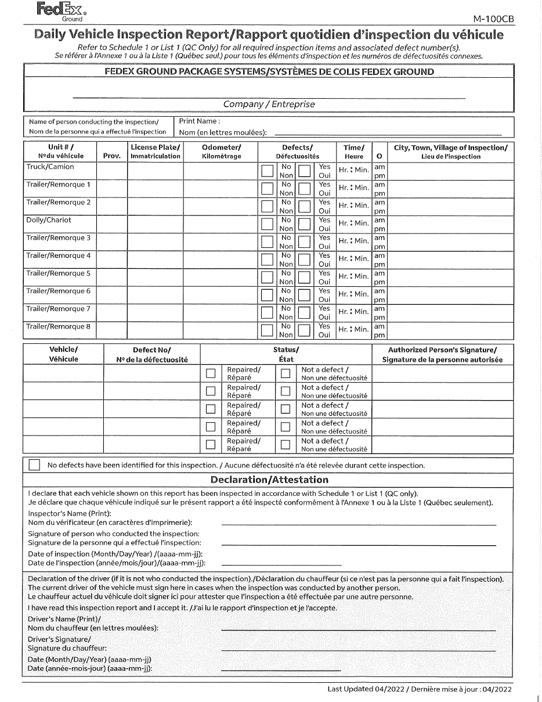

Every Log, Every Day
Processing LH Daily Vehicle Inspection Reports. The station process starts at the drop point.
Slide 1 · 0:45 · Warm open, then move briskly — the stakes land on slide 2, not here.
Good morning, everyone — thanks for making the time.
The next half hour is about one piece of paper. It's called the M-100CB. You'll also hear it called the LHDVIR — the Linehaul Daily Vehicle Inspection Report. Same document, two names.
Before we start, one thing I want to say plainly: this is proactive training. Every station is getting this same session, so we all walk out running the process the same way. Nothing in here is aimed at anybody.
Let's talk about why it matters.
Acronyms, if anyone needs them: TSP = Transportation Service Provider · LHDVIR = Linehaul Daily Vehicle Inspection Report · FCSA = Fleet Compliance Self Assessment · DFMS = District Fleet Maintenance Specialist · TRACS = the record system for documented discussions · BD = Business Discussion · SOM = Senior Operations Manager.
An inspection you can't produce
is an inspection that didn't happen.
A Day Receive at the drop point · review against the 9 points · action defects · file.
To Close Corrective action plan · refresher training · weekly audits · a minimum of six weeks of validated logs · a passing retest.
Slide 2 · 2:30 · Land the big line and pause. Walk the chain left to right, then hold on the two panels.
Let me start with the one sentence everything else hangs off.
In compliance terms, an inspection you can't produce is an inspection that didn't happen. It doesn't matter that the driver walked the trailer. It doesn't matter that the inspection was thorough. If we can't put the paper in a tester's hand, then on paper it never happened. That's the standard we're held to.
So how does a station actually get into trouble here? It's never dramatic. It goes like this.
Step one — drivers hand their forms in. Good. The paper is in the building.
Step two — nobody verifies them daily. They go into a folder, or a tray, or a drawer, and they sit.
Step three — because nobody's looking, nobody follows up. A missing form is never noticed. An unsigned form is never sent back.
Step four — months later, a tester asks for one driver's DVIRs across a date range, and we can't produce them. Not because anybody was careless. Because there was no daily check.
That's the whole pattern. Four quiet steps — and every one of them is preventable at step two.
Now look at the trade along the bottom. The daily rhythm costs minutes. Collect from the drop point, review against the nine points, action any defects, file. On a normal day that's a few minutes of one person's time.
The recovery costs months. Once a corrective action plan opens, you're looking at refresher training, weekly audits, and a minimum of six weeks of clean validated logs plus a passing retest before it closes. And during those six weeks the daily work still has to happen — you just do it under scrutiny.
So the real choice isn't "do the process" or "skip the process." It's minutes a day — or months of recovery, and the minutes a day anyway.
Anatomy of the M-100CB

1 2 3 4 5assets/m100cb-form.png to replace it
Company, and the printed name of the person conducting the inspection. Two fields that get skipped more than any others.
Truck, Trailers 1–8 and the Dolly — the dolly sits fourth, between Trailer 2 and Trailer 3. Unit #, Prov., plate, odometer, defect No/Yes, time with am/pm, and city of inspection.
Five rows: vehicle, Defect No. from Schedule 1 or List 1 (QC), status — Repaired or Not a defect — and the Authorized Person's Signature.
The clean-inspection checkbox. It does not replace the per-unit No/Yes boxes above.
Inspector's printed name, signature and date — then the second block, signed by the current driver whenever someone else conducted the inspection.
Slide 3 · 2:00 · Orientation only. Point at zones, don't read fields aloud. Resist teaching the 9-point check — that's slide 6.
Before we talk process, everybody in this room should be able to read this form fluently. Not fill it out — read it. Because your job is to verify it, and you can't verify what you can't read.
Five zones.
Zone one, the header. Company, and the printed name of the person conducting the inspection. These two get skipped more than anything else on the page — they sit above the table, and people's eyes go straight to the grid.
Zone two is the main event — ten equipment rows. Truck, Trailers one through eight, and the Dolly. Watch the order: the dolly sits fourth, between Trailer 2 and Trailer 3, not at the bottom where you'd expect it. For each unit there's a unit number, province, licence plate, odometer, the defect No/Yes boxes, the time with am or pm, and the city of inspection.
Zone three, the defect detail table — five rows. If a defect was found, this is where it gets described: which vehicle, the defect number from Schedule 1 or List 1, whether it was repaired or found not to be a defect, and the authorized person's signature.
Zone four is the "no defects identified" checkbox. Important — that box does not replace the per-unit No/Yes boxes up in zone two. Both get completed.
Zone five, the declarations. The inspector prints their name, signs, and dates. Then there's a second block — the driver's declaration — signed by the current driver whenever somebody other than them conducted the inspection.
Every field on this form is a test point. Every one.
The Life of an LHDVIR
every operating day
file · audit
& escalation
Slide 4 · 2:00 · This is the map, not the detail. Spend your time on the ownership strip along the bottom.
Here's the whole process on one slide. Five steps — we'll spend a couple of minutes on each of them after this.
The driver inspects and completes the form. They hand it in daily at our drop point. We review it daily. We action any defects. We file it and keep it six months.
Now — the important part of this slide is the strip along the bottom, because that's where ownership lives.
Think of it as two halves. Getting the paper into the building is the TSP's obligation. That's their contractual responsibility, and holding them to it is my job as Linehaul Manager. If a TSP driver isn't handing forms in, that conversation is mine to have.
Everything after the drop point is ours. Collect, review, action, file, audit — that's the station's side of the line.
Now, I'm deliberately not telling you who does what inside your building. You know your operation better than I do — who has the desk, who has the capacity, who your backups should be. That's station management's call, and it should be, because a structure I impose from outside won't survive a vacation week.
What I am telling you is that every one of those five things has to have a name against it, and a trained backup behind that name. Not a role in the abstract — a person, and a second person.
Notice that nobody in this room is on the hook for filling out forms. You're on the hook for verifying that the process runs.
The next five slides zoom into one step each. The purple rail on the left will tell you where we are.
Daily Hand-In
Daily means daily — not weekly bundles.
Slide 5 · 2:00 · The single most important slide in the deck. Slow down. Make eye contact on the "same day" ask.
Step one — and honestly, this is the most important slide in the deck.
The M-100CB gets handed in every single day the driver operates. Daily means daily. Not a stack on Friday. Not whenever they remember. Every operating day.
Here's why that matters so much. If a driver walks out of this building with yesterday's DVIR still sitting in the truck, that is the exact moment the process starts to break. That form is now outside our control. It might come back tomorrow. It might come back in a week, dog-eared. It might never come back — and we wouldn't know, because nothing told us to look for it.
So the station's job is to make handing it in the easiest possible thing to do. One drop point. One. Clearly labelled, in a consistent place, known to every TSP driver who comes through here. A folder, a mailbox, a marked tray — the format doesn't matter. A labelled mailbox outside the operations office works really well, because it's on the way out and impossible to miss.
What doesn't work is "give it to whoever's around," or "leave it on the supervisor's desk." Those aren't systems. Those are hopes.
And the third piece — when a hand-in is missed, flag it the same day. Send it to me, and I'll take it up with the TSP.
I want to be really clear on this one. I can only have that conversation if your team flags it while it's still fresh. A miss reported three weeks later is just history. A miss reported today is something I can actually fix.
The 9-Point Check
Standard M-100CB booklet, completed by hand. No electronic edits.
Full city, town or village. Ditto marks only if unchanged from the prior entry.
Yes or No for every unit listed. Blank or both ticked = non-compliant.
Exact time, clearly am/pm or military.
Full month, day and year.
Inspector's name printed in full.
Inspector's signature present.
Signed whenever someone other than the driver inspected. Blank is fine if the driver inspected.
Signature required on team operations only.
Slide 6 · 2:30 · Do NOT read all nine. Group them: the form (1), where/when (2,4,5), the defect declaration (3), the signatures (6–9).
Step two. The daily review.
I want to be upfront about where this list comes from. These nine points are lifted straight out of the FCSA test instructions. This is not a checklist we invented — this is literally what the tester scores each form against. So if we review to this standard every day, the test becomes a formality.
Let me group them so they're easier to hold in your head.
First — is it a real form? Standard M-100CB booklet, completed by hand. No electronic edits, no substitutes.
Then the where and when. City of inspection: full city, town or village name. Ditto marks are fine, but only where the location genuinely hasn't changed from the entry directly above. Time: exact, with am or pm clearly marked, or military. Date: full month, day and year — not just the day number.
Then the one that catches everybody — point three, the defect box. Yes or No has to be checked for every unit listed. Not just the tractor: every trailer, the dolly, every line with equipment on it. A blank box fails. Both boxes checked fails. This is the most common finding by a wide margin.
Then the signatures. The inspector prints their name in full — a signature by itself doesn't satisfy that point. The inspector signs. The driver's declaration gets signed whenever somebody other than the driver did the inspection; if the driver inspected their own equipment, that block can stay blank. And on team operations, the co-driver signs.
Now here's the payoff for doing this daily instead of weekly. If we catch an error today, the driver is back tomorrow — it's a thirty-second conversation and a corrected form. If we catch it six months from now during a test, that driver may not even be on the account anymore, and the form is simply wrong. Permanently.
There's a one-page version of this list you can print and pin at the drop point. Use it. Nobody should be doing this from memory.
Major vs. Minor
- Out of service until repaired — no exceptions, no judgement call.
- Contact FleetNet immediately.
- Trailer examples: 4.3M coupling or locking mechanism damaged or fails to lock · 21.3M flat tire · 22.3M loose, missing or ineffective wheel fastener.
- Legal to stay on the road.
- Flag the trailer and prioritise its return to MNTR for the local mechanic — the same prioritisation we already use for PM-due units.
- Trailer examples: 18.1 required lamp does not function as intended · 22.1 hub oil below minimum level.
Slide 7 · 3:15 · Trigger box → the "how to tell" rule → major branch → minor branch → paper loop. The M/letter rule is the takeaway.
Step three. What happens when that defect box says Yes.
First thing: every Yes gets reviewed by the station the same day. Not filed and looked at later — reviewed.
Now, the question I get most often is "how do I know if it's major or minor?" And the good news is you don't have to decide. It's already been decided for you, and it's printed in the same booklet the driver is carrying.
In Schedule 1 — that's the standard used everywhere outside Quebec — major defects are printed in bold on a grey background, and the defect number ends in the letter M. One-point-three-M. Twenty-one-point-three-M. If you see an M, it's major.
In List 1, which is Quebec only, it works slightly differently: major defects are shaded, and the number ends in a letter rather than a digit. One-point-A is major. One-point-one is minor.
And in both documents, plain text on a white background means minor. That's the whole test.
So — major defect. The unit does not roll. It's out of service until it's repaired. There's no judgement call here, and no "it's probably fine to get it back." Contact FleetNet immediately. On our trailers that means things like a coupling or locking mechanism that's damaged or fails to lock, a flat tire, a loose or missing wheel fastener.
Minor defect. Legal to stay on the road — but legal doesn't mean ignore it. Flag that trailer and prioritise getting it back to MNTR for the local mechanic, the same way we already prioritise a unit that's PM-due. That's things like a required lamp not working as intended, or hub oil below the minimum level on the sight glass.
One important piece of scope before we move on. Everything I've just described applies to our trailers and dollies. The tractor is TSP-maintained equipment — if there's a defect on the power unit, that's the TSP's to action, not ours. We don't chase it, we don't book it into MNTR. What we do care about is that it's declared correctly on the form, because that's still a test point.
So: read every unit, but action the trailer and dolly defects.
And whichever it is, close the paper loop. The defect number goes in the table, the status gets marked — repaired, or not a defect — and the authorized person signs it off. A defect that got fixed but never signed off is still an open defect on paper, and that's exactly how a tester will read it.
When in doubt: treat it as major, and call FleetNet.
Filed, Not Filed Away
Reviewed forms are filed the same day. Filing is part of the daily rhythm, not a someday task.
Filed so that any driver plus any date range can be pulled on request — that is exactly how FCSA will ask for them.
Smaller stations, fewer drivers: a folder per driver, by month. Larger operations: split by TSP, then by week — far fewer folders, and six months still fits one drawer. Either way, you must be able to get from driver → TSP → week.
Slide 8 · 2:00 · Fast slide — and a deliberate breather after two dense ones. Don't over-explain it.
Step four, and this one's quick.
Reviewed forms get filed the same day. Filing is part of the daily rhythm — it isn't a someday task and it isn't a Friday task.
We keep them six months at the station.
And here's the part that actually matters: file means retrievable. The test question isn't "do you have these forms somewhere?" It's "how many of the required DVIRs are on file?" — and then they ask for a specific driver over a specific date range.
So a form we have but can't find scores exactly the same as a form we never received. Zero.
Now, how you file depends on the size of your operation, and I'd rather you picked the one that fits than copied ours.
If you're a smaller station with fewer drivers, a folder per driver, filed by month, works fine. You can hold six months without much bulk.
Here at MNTR we run a bigger operation, and a folder per driver got unmanageable fast — you end up with a drawer full of folders. So we split it by TSP, then by week. Far fewer folders, and six months of logs still fits in one drawer.
Whichever you pick, the test is the same: can you get from a driver's name, to their TSP, to the right week, and put your hand on the form? If yes, your convention works. And whatever you pick, every trained backup uses that same one — the filing can't change depending on who's covering that day.
The Correction Loop
Slide 9 · 1:45 · Walk the loop left to right, land hard on "found is not fixed," then the ladder. Stress that rung 3 is for patterns.
Step five. What happens when the daily review finds a problem — because it will.
The loop is simple. You find an error. You contact the TSP the same day. The form goes back for correction. And then — this is the bit people miss — you track it until the corrected form is physically in your file.
Found is not fixed. Spotting a blank signature and telling somebody about it doesn't close anything. The corrected paper in the folder closes it.
Most of these are genuinely small. Because we're reviewing daily, the driver is back tomorrow, and it's a thirty-second conversation at the drop point.
On the right is the escalation ladder, and I want to be clear about when to use it. Rung one is the routine fix — that's the vast majority of them. Rung two is me: missing hand-ins altogether, or the same driver making the same error repeatedly. Rung three is a Business Discussion, recorded in TRACS, and that's for persistent non-compliance. A pattern, not a one-off. Don't open a BD over a single missing signature.
Last thing — keep a simple chase log. Date, driver, issue, resolution. Four columns, that's it. That log is the station's protection: it shows the process was worked even when a TSP was slow to respond.
How FCSA Tests Us
Four questions, answered for one driver over one date range. Nothing here is new.
Driver didn't operate at all in the range, or the paperwork went to Legal at PGH. Rentals are not exempt.
One per power unit, per day of operation — verified against TMS Driver Detail and the Driver Daily Log. Full off-duty days excluded.
This is the drop point and the filing convention, scored. Retrievable, by driver and date.
Each filed form is scored against the same 9 completion points we review every day. This is slide 6, scored.
Slide 10 · 1:30 · Keep it light — this slide defuses anxiety, it doesn't create it. Land on "nothing new here."
Quick touch on how the test actually works — mostly so it isn't a mystery.
For a given driver over a given date range, the tester answers four questions.
One — is there a valid exemption? That's if the driver didn't operate at all in that range, or if the paperwork has gone to Legal at PGH. And note this one: rentals are not exempt. That catches people out.
Two — how many DVIRs were required? One per power unit, per day of operation. That count is verified against TMS Driver Detail and the Driver Daily Log, and full off-duty days come out of it.
Three — how many are actually on file?
Four — of those, how many pass the completion criteria?
And here's the point of this slide. Look at questions three and four. Question three is our drop point and our filing convention. Question four is the nine-point review we just walked through. There is nothing new being tested here.
Run the daily process, and the test genuinely passes itself.
If you need help, the District Fleet Maintenance Specialist is the support contact for this process, and the knowledge article is "Daily Vehicle Inspections, Canada" — KB000396060.
Six Commitments
One place, clearly marked, known to every TSP driver.
Misses flagged to the LH Manager the same day.
Errors caught within 24 hours, while the driver is back tomorrow.
FleetNet for major. MNTR priority for minor. Paper loop closed.
Retrievable by driver and by date, on demand.
Five at random, checked by someone other than the filer. Results visible to leadership.
every day
Slide 11 · 1:00 · Read the six, don't elaborate — the detail is already behind you. Running long? Cut slide 11, never this one.
So let me land this with six commitments. This is what I'm asking each station to have in place.
One — a labelled drop point exists. One place, known to every TSP driver.
Two — daily hand-in is enforced, and misses get flagged to me the same day.
Three — the daily nine-point review happens, so errors are caught within twenty-four hours.
Four — defects get actioned the same day. FleetNet for major, MNTR priority for minor.
Five — forms are filed and retained six months, in a convention that fits your station, retrievable by driver and by date.
Six — an end-of-week audit of five at random, run by someone other than the person who files, with the results visible to leadership.
Six commitments. One daily rhythm. Zero surprises at test time.
Let's take your questions.
Questions?
Slide 12 · ~6:00 · Sit here for the whole Q&A. Don't advance until questions are done.
That's the ask. Let's take your questions — on the form itself, on the process, or on what this looks like day to day at your station.
If nobody starts: prompt them. "Who here already has a labelled drop point?" or "What's the piece of this you think will be hardest at your station?" Either one usually opens it up.
Likely questions, and short answers:
"What if a driver hands in a week's worth at once?" Take it, review it, file it — then flag it to me. The forms aren't the problem; the pattern is, and that's a TSP conversation.
"What if there are more than five defects?" The table only holds five rows. I'll confirm the correct handling and come back to you — don't guess on the day.
"Who audits if we're short-staffed that week?" Anyone trained who didn't do the filing. The constraint is a second set of eyes, not a specific title.
"Does the tractor defect come back on us?" No — the TSP actions their own power unit. We action trailers and dollies. But it still has to be declared correctly on the form.
If you don't know: say so and take it away. "I'll check with the DFMS and come back to you" is a better answer than a confident wrong one — especially in a compliance session.
Thank You.
Slide 13 · 0:40 · Close warm and stop. Don't restart the content here.
Thank you all for your time.
Everything we covered comes down to one habit: every log, every day. Get the paper in the building, check it while it's fresh, action what needs actioning, and file it where you can find it again.
The one-page checklist is yours — print it, pin it at the drop point, and give a copy to whoever's covering when your usual person is off.
If anything comes up after today, come to me or your DFMS. Thanks again.